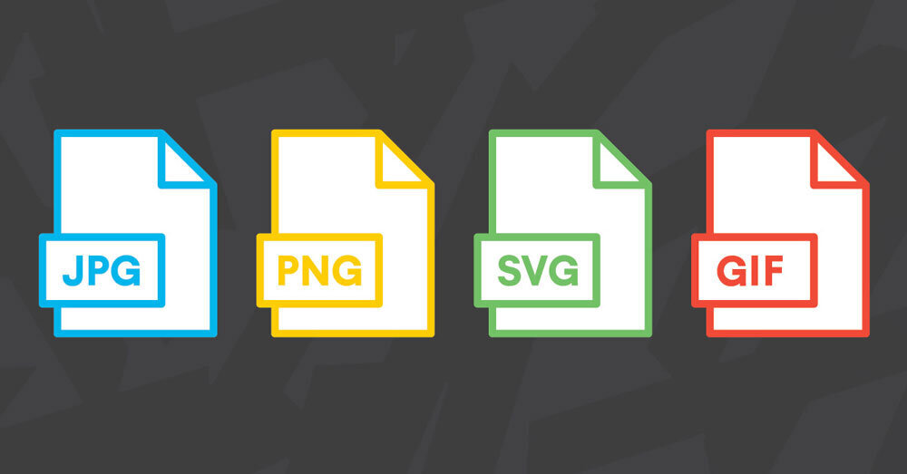

SVG
Modes
Coordinates
Basic Shapes
Accessibility
Animations
why SVG ?

Modes
Inline
- Putting your SVG inline saves an HTTP request
- You can assign classes and ids to SVG elements and style them with CSS
- Lets you use CSS interactions (like :focus) and CSS animations on your SVG image
- You can make SVG markup into a hyperlink by wrapping it in an <a> element.
- Duplication makes for resource-intensive maintenance.
- Extra SVG code increases the size of your HTML file.
- The browser cannot cache inline SVG as it would cache regular image assets
< IMG >
< img > - HTML
background-image - CSS
- Quick, familiar image syntax with built-in text equivalent available in the alt attribute.
- You can make the image into a hyperlink easily by nesting the <img> inside an <a> element.
- The SVG file can be cached by the browser
- You cannot manipulate the image with JavaScript.
- External stylesheets invoked from the SVG file take no effect.
- You cannot restyle the image with CSS pseudoclasses (like :focus).
< Object >
Object
interaction with svg in an object:
< Sprite > !
SVG sprite file
HTML:
CSS:
Basic shapes
< rect >
< polyline >
< circle >
< polygon >
< line >
< path >
< rect >
"x" - The x position of the top left corner of the rectangle.
"y" - The y position of the top left corner of the rectangle.
"width" - The width of the rectangle.
"height" - The height of the rectangle.
"rx" - The x radius of the corners of the rectangle.
"yx" - The y radius of the corners of the rectangle.
< circle >
"r" - The radius of the circle.
"cx" - The x position of the center of the circle.
"yx" - The y position of the center of the circle.
< line >
"x1" - The x position of point 1.
"y1" - The y position of point 1.
"x2" - The x position of point 2.
"y2" - The y position of point 2.
ACESSIBILITY
 W3C - Accessibility Features of SVG
W3C - Accessibility Features of SVG
Accessible SVG?
Scalable Vector Graphics [SVG] is an Extensible Markup Language (XML) application for producing Web graphics. SVG provides many accessibility benefits to disabled users, some originating from the vector graphics model, some inherited because SVG is built on top of XML, and some in the design of SVG itself, for example, SVG-specific elements for alternative equivalents.
SVG images are scalable

Scalable graphics can help users with low vision make sense of an image at a size that best suits their needs.
- Structured images
- Alternative equivalents *
- XML - Plain text
- XML - Stylesheets
- Extended Styling
- XML - DOM interface *
- XML - SVG with other XML languages
* can enable the use of many assistive technologies with SVG images
- screen magnifiers
- screen readers
- speech recognition software
- alternative keyboards
- alternative pointing devices
Assistive technology
Equivalent Alternatives
Providing an alternative equivalent for inaccessible content is one of the primary ways authors can make their documents accessible to people with disabilities.
SVG as a container
In addition to having an .svg image,
Scalable Vector Graphics:
- Can have an image within a SVG, shape etc
- Can have text
- Can have a link
- Can have any structural element
<SVG> allows the following elements and attributes related to accessibility.
Title and Description
title / desc
title - Provides a human-readable title for the element that contains it.
desc - Provides a longer more complete description of an element that contains it.